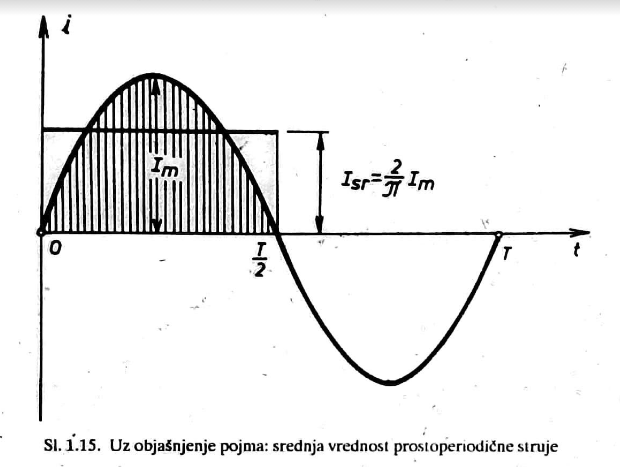
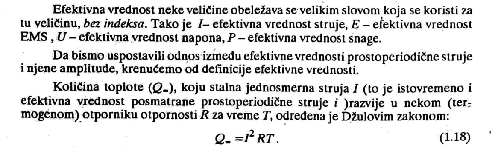

Srednja i efektivna vrednost. Prostoperiodična i jednosmerna struja imaju dva zajednička delovanja:
(a) i kod jedne i kod druge kroz poprečni presek provodnika neka količina elektriciteta; (b) provodnik se zagreva kada kroz njega protiče bilo koja od pomenutih
struja. Da bismo mogli da uporedimo pomenuta delovanja ovih struja, uvode se pojmovi dve srednje vrednosti prostoperiodiče struje.
-srednja aritmetička vvrednost, ili prosto srednja vrednost struje.
-srednja kvadratna vrednost ili efektivna vrednost struje

Srednja vrednost prostoperiodične struje važna je za neke praktične primene: Kod ispravljanja (usmeravanja)
prostoperiodične struje, zatim u elektrohemiji. jer je hemijsko dejtsvo struje jednako kod struja koje imaju istu srednju vrednost.
